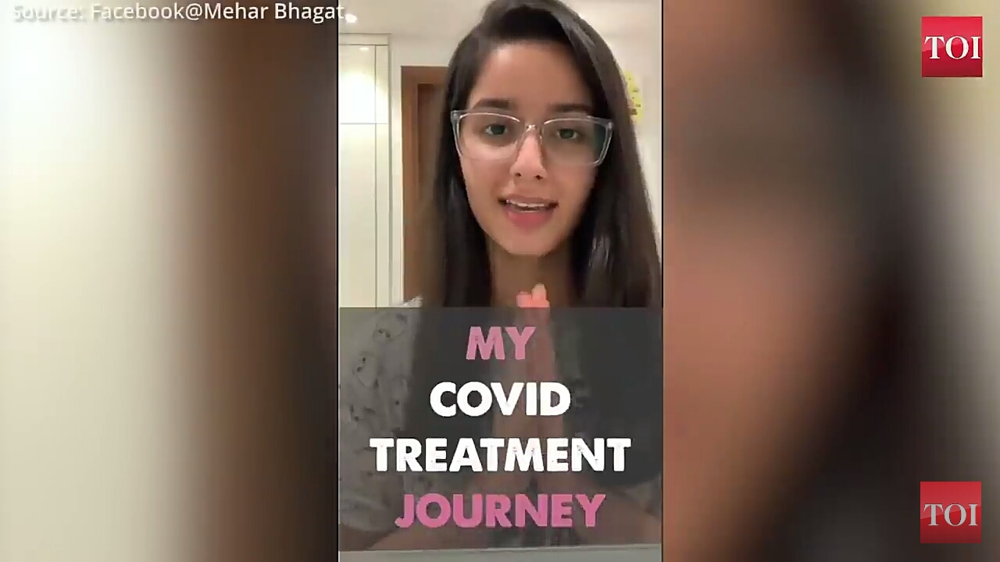
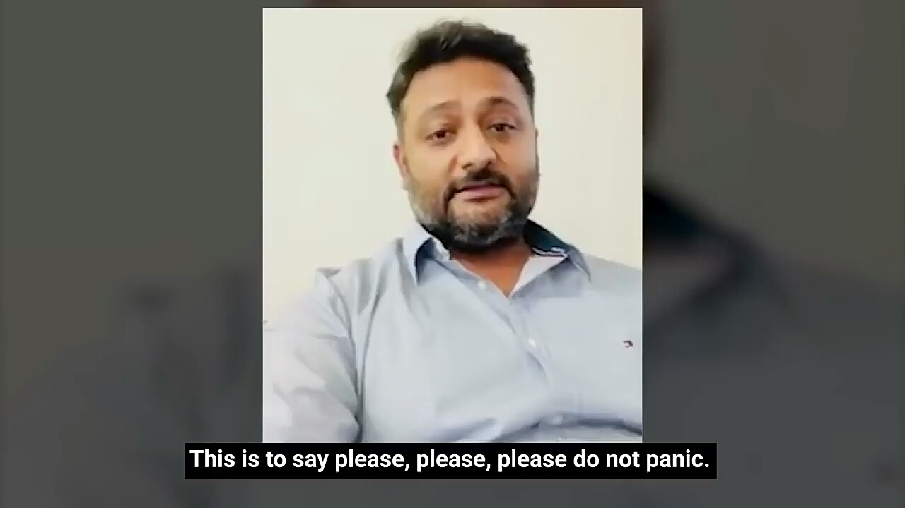
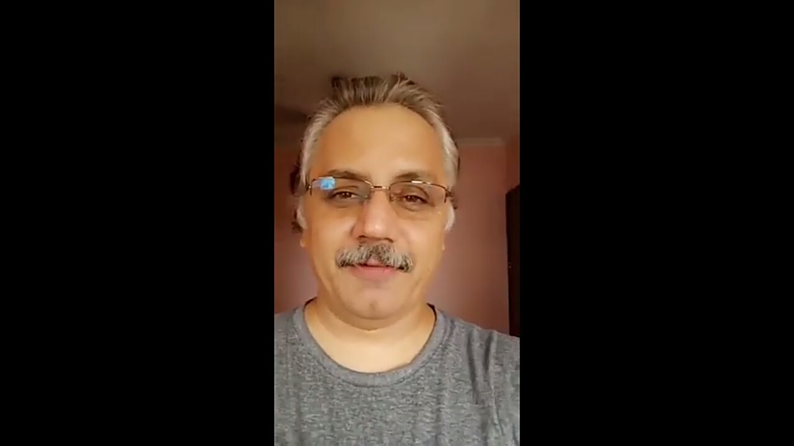
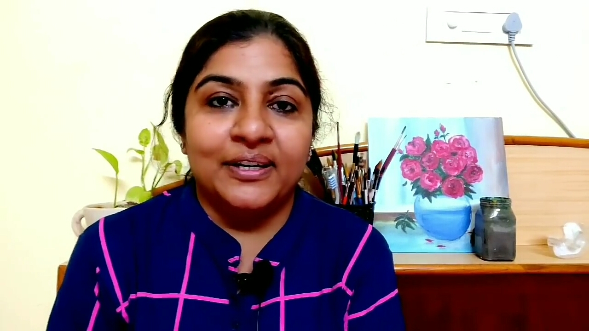
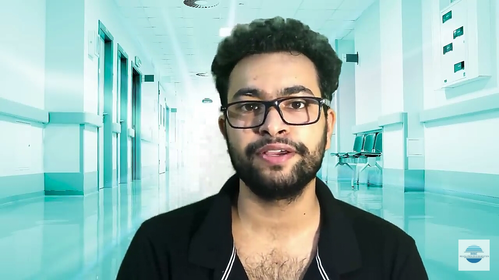
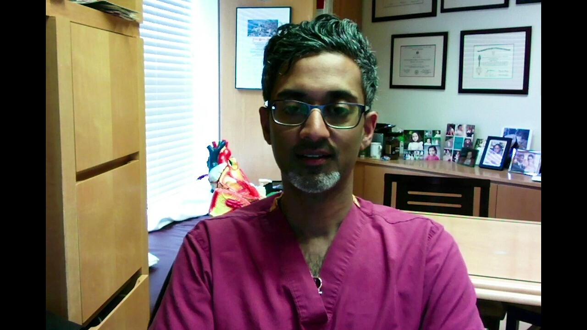
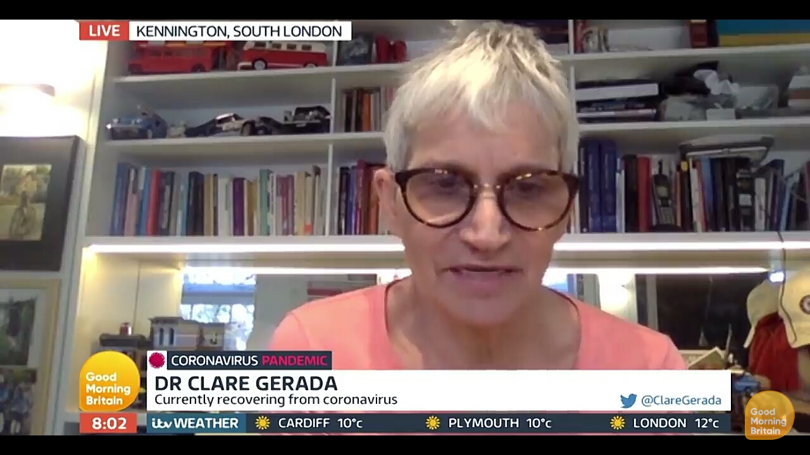
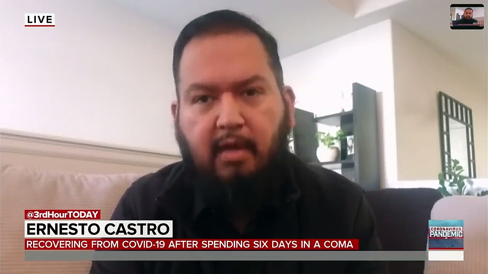
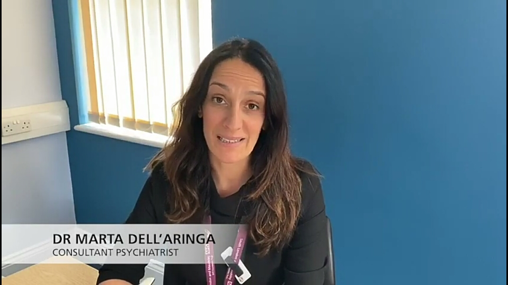
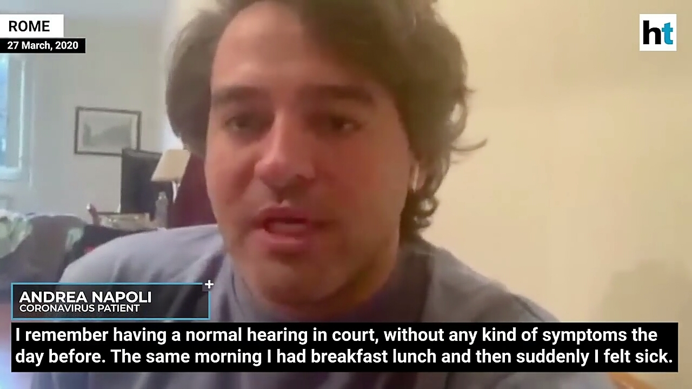

Indian's Experiences Shared |
|---|
|  |
|
| Delhi girl shares her experience after contracting COVID-19 |
21 Year Old Mumbai Boy's Story Of COVID-19 Recovery | Curly Tales |
|  |
 |
| 'Please, please, please...': Watch recovered Coronavirus patient's message |
Mr. Praveen Singh from Dwarka, sharing his COVID-19 recovery experience. |
|  |
 |
| My Covid-19 Experience..and My Husband corona virus symptoms..Treatment..Experience |
My Covid 19 (coronavirus) journey (Age 25)|Symptoms, Test, Medicines, Recovery and Plasma donation |
Foreign Experiences Shared |
|---|
|  |
 |
| Dr. Isaac George Shares His Experience Recovering from COVID-19 |
Coronavirus Survivor Describes Her Experience | Good Morning Britain |
|
 |
| The Story of a Filipino COVID-19 Survivor | Team FitFil Episode 6 |
Recovering Coronavirus Patient Shares Story After 6 days In Coma | TODAY |
|  |
 |
| Dr Marta Dell'Aringa shares her experience of Coronavirus (COVID-19) |
'Lot of pain, very hard...': Italian Coronavirus patient recounts experience |
Home
General Information
Covid Helpline Numbers